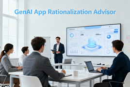
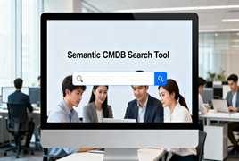

My Background
I create enterprise solutions that streamline workflows, reduce inefficiencies, and enable smarter decision-making. Over 20 years, I’ve led application modernization, cloud migration, and portfolio optimization initiatives at GE Vernova, GE Power, and Alstom Power.
I combine technical insight with business strategy to turn complex systems into high-value products that deliver measurable business impact.
I experiment with AI prototypes to explore emerging technologies for process optimization, predictive insights, and better decision-making. These projects showcase my ability to blend product management, architecture, and hands-on experimentation to create innovative enterprise solutions.
My Product Approach
Discover & Frame
Identify business problems, align stakeholders, and define clear requirements by partnering with cross-functional teams to uncover high-value opportunities.
Data & Design
Work with technical teams, including engineers, analysts, and data specialists, to shape data needs, evaluate solution approaches, and design architectures that balance feasibility, scalability, and business value.
Prototype & Iterate
Collaborate with engineers to build and refine prototypes, validate assumptions, and develop user experiences through continuous feedback loops.
Measure & Scale
Define KPIs, assess performance, and plan scalable workflows and architectures that support long-term adoption and enterprise growth.
Communicate & Govern
Ensure transparency, responsible decision-making, and organizational alignment by clearly communicating risks, tradeoffs, and outcomes to stakeholders.
AI and Emerging Technology Prototypes
My prototypes demonstrate hands-on exploration of AI for enterprise decision-making. Each builds on the previous, showing a clear progression from structured data analysis to semantic search to predictive and generative AI.
GenAI App Rationalization Advisor: Introduced AI-driven insights to streamline application portfolios. I led MVP design, workflow, and integration; generative AI assisted in coding, data processing, and prompt engineering.
Semantic CMDB Search Tool: Explored natural-language search of ServiceNow CMDB data. I defined scope, architecture, and workflow while AI implemented embeddings, search logic, and the Streamlit interface.
AI Benefits Cost & Utilization Analyzer: Planned prototype to consolidate employee benefits and utilization data for predictive insights and executive summaries. I have ingested open datasets into the Bronze layer of a local Data Lakehouse, including CMS claims, Medicare DRG classifications, and BLS benefits data. I am defining the project scope, architecture, and workflow, and experimenting with AI-assisted data processing and code generation. Future phases are expected to include predictive analytics, computer vision for document analysis, and a conversational AI interface for interactive insights.

GenAI App Rationalization Advisor
- Generative AI (GPT-3.5-turbo) with prompt engineering
- CSV input, automated PDF/CSV reports
- Tkinter GUI for local interactive prototype
View Case Study

Semantic CMDB Search Tool
- OpenAI embeddings + Chroma vector DB
- Streamlit interactive interface
- FastAPI backend orchestration
- Semantic search for natural-language queries
View Case Study

AI Benefits Cost & Utilization Analyzer
- Predictive AI & Computer Vision (planned)
- Streamlit interactive dashboard
- Generative reporting via GPT APIs
- Prompt engineering for executive insights
View Case Study
Technology Overview
This section highlights the AI technologies and enterprise tools integrated across my prototypes. I managed architecture, MVP scope, and AI integration while AI assisted with coding and modeling.
AI & Machine Learning
- Generative AI: GPT-3.5-turbo for insights and conversational interfaces
- Semantic Search: Embeddings for natural-language search
- Predictive Analytics (planned)
- Computer Vision (planned)
Data & Storage
- Local Data Lakehouse: MinIO, Apache Spark, Dremio, Project Nessie
- Vector Databases: Chroma for semantic search
- CSV & CMDB Integration: Enterprise application metadata
Applications & Interfaces
- Web: Streamlit dashboards
- Desktop: Tkinter local apps
- Backend: FastAPI for orchestration
Data Sources & Inputs
- ServiceNow CMDB
- Application portfolios (cost, usage, risk, metadata)
- Public employee benefits and claims datasets (CMS, BLS, Medicare)
Outputs & Deliverables
- Actionable recommendations with clear rationale
- Stakeholder-specific reports (PDF, CSV)
- Interactive dashboards for insights and decision-making
Key TPM Focus Areas
- Translating enterprise needs into AI-driven solutions
- Defining MVP scope and prototyping roadmap
- Coordinating AI implementation with generative AI
- Ensuring secure, governed, and scalable experiments
- Driving adoption of AI insights across the organization